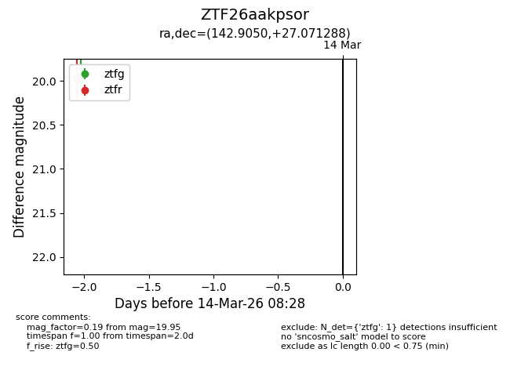
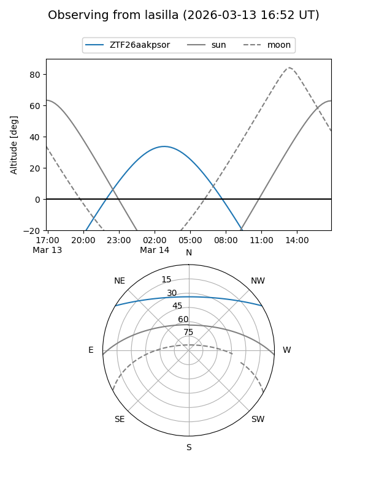
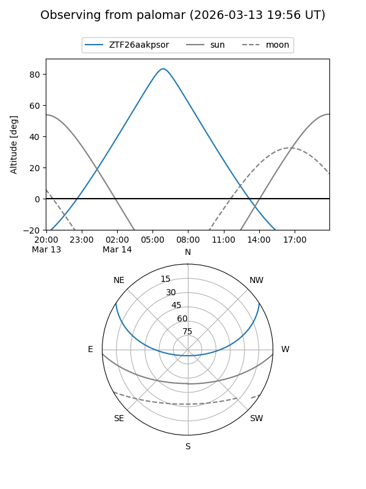

ZTF26aakpsor
Target ZTF26aakpsor at 2026-03-14 08:29
Aliases and brokers:
FINK: link
Lasair: link
ALeRCE: link
alt names
ZTF26aakpsor (ztf,fink_ztf)
Coordinates:
equatorial (ra, dec) = 142.9050,+27.07129
equatorial (HMS+DMS) = 09:31:37.20,+27:04:16.64
galactic (l, b) = (201.0200,+45.84003)
Flags:
Photometry:
last ztfg=19.95
1 ztfg detections
Lightcurve

Visibility


Additional plots